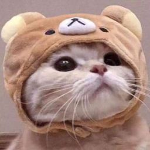
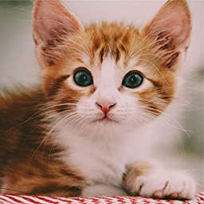
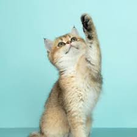
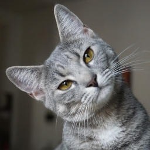

Adoptable Cats!

Addy
Addy is a spunky cat with lots of personality.

Clark
Clark is very young but has so much to talk about.

Silvia
Silvia may be small but she hangs in there with the big cats!
Fred
Fred is alittl shy at first, but gets close to you fast!

Stephy
Stephy has lots of energy, and likes to take naps on your computer.

Oswald
Oswald was built for speed, as he likes to run laps around his pen and the cattery.